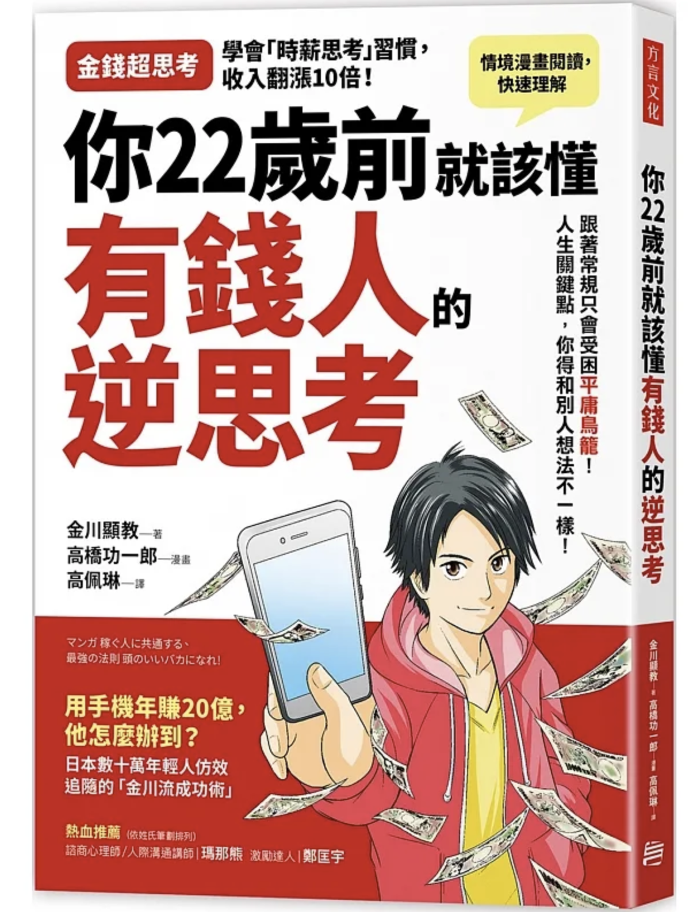

[讀書心得] 你22歲前就該懂有錢人的逆思考
- 6 minutes read - 2910 words
🗺️ 全書架構
整本書分為五個章節：
- 第一章講述作者的經歷，並描述自己經過兩次重考失利後，如何利用「逆向學習法」成功考取立命館大學
- 第二章說明什麼是「資訊弱能」，以及如何收集資訊，如何吸收
- 第三章主旨是「時間管理」，以及用「時薪思維」來看待自己的時間；另外也解釋了作者為什麼認為「CAPD」比「PDCA」要來得好
- 第四章的主題是「人脈」，解釋人脈以時間為維度區分，可以分為過去、現在、未來等三種人脈，但不是所有人脈都值得經營
- 第五章提到「領導」，闡述了作者對領導力的體會
🏃♂️ 看完這本書後的行動指南
- 開始使用 Google Calendar 來安排自己的待辦事項
- 另一本小書「The Busy Person’s Guide to The Done List」也提到要把重要的事情放到 calendar 上，關於 time boxing 的主題之後有機會再另外寫一篇文章分享
- 試著用作者解釋的速讀法讀一本書
🗣️ 這本書在說什麼
作者金川顯教的求學生涯並不順遂，父母在他國中時離婚，他想考上國立大學減輕父親的負擔，但重考兩次才考上理想的大學。他想讓父親過上好生活，設下要在大學期間就通過會計師證照考試的目標；他記取了重考時失利的教訓，分配好自己每個月唸書的進度，並採用逆向讀書法，最終成功通過會計師檢定考試，取得了證照。
畢業後也順利進入日本有名的監察法人公司德勤，原本作者以為這就是他夢寐以求的工作，但每天忙碌的日子，卻讓他有些茫然失措，不確定這是不是他想要的生活；直到有一天，作者在書店看到了「富爸爸窮爸爸」這本書，被書裡的一句話當頭棒喝—「就算你考上好大學，接著到大企業工作，若欠缺財富知識，也只是站上倉鼠轉輪的入口罷了」。
從那天起，作者努力學習財商相關知識，三年後，自己經營副業有成，有了穩定的收入之後，從任職的大公司辭職，開始經營自己的企業，後來創辦了三間公司，在三十歲出頭就財富自由，過著自己想要的人生。
作者在這本書裡，介紹了自己的經歷，還有如何唸書、收集資訊、做筆記等，才扭轉了自己早期求學不順利的失敗經歷，一舉取得了財富自由的成果。
💬 關鍵字
- 逆向學習法
- 看答案 -> 讀講義內容 -> 作答
- 原本自己苦思一小時可能也解不出來；寧願先看答案，再回頭練習作答，以提高重複的次數
- 資訊弱能
- 一次讀十本書—主題閱讀
- 15 分鐘速讀
- 帶著問題去看書，不求整本書都看完
- 輸入 + 輸出
- 聚會 > 上課
- 重點是會後找講師提問
- 和優秀的人在一起
- 掌握 50% 資訊就行動
- 不求完美
- 時薪思考
- 外包小於自己時薪的工作
- PDCA
- 相較於傳統的 PDCA (Plan -> Do -> Check -> Action)，作者提倡 CAPD (Check -> Action -> Plan -> Do)
- 用 Google 日曆管理時間和工作
- 這可能是下一篇文章的主題
🤔 這本書沒告訴你什麼
- 要捨棄不重要的工作，但沒告訴你怎麼判斷一件事重不重要
- 當安排在日曆上的工作沒辦法順利完成時，該怎麼做
🧠 我學到了什麼
逆向學習法
作者提倡的逆向學習法，對我有三點啟發：
-
訂切實可行的目標很重要
作者在準備會計考試時，用反推法訂下了自己每個月的看書進度，每個月對作者來說都是一次里程碑；有了清晰的目標，還需要透過合理的安排，立下合適的 deadline，讓自己每一段時間都有固定的進度，才不會無止境拖延。
-
快速
相較於傳統的看教材學習，接著做題目，看解答訂正，作者提出了先看解答，再回頭看教材解釋和自己作答練習，的確是另闢蹊徑的一條路；雖然我懷疑一方面也是因為作者重考了兩次，所以其實對教材內容已經有了一定的熟悉程度了。
不過我們可以仿效的是，當遵循陳規做某件事時，也可以用不同的順序或是程序試試看；以往大家都這樣做，並不代表這樣做就是最佳的。能夠跳出巢臼，從另一個角度來看待同一件事情，往往會有意想不到的收穫。
舉個例子，有一本書是「為什麼要睡覺」，我們如果照這順序讀的話，會先看一下作者從科學的角度解釋睡覺這回事，了解為什麼睡覺對我們很重要，睡覺時大腦做了哪些事情等等，最後作者才提出要怎麼做，可以改善睡眠；但其實我看這本書最主要的目的，不是了解這些背後的原理，對我來說更重要的是「實際改善我的睡眠」。
所以我完全可以先跳到最後看一下怎麼做，開始實踐之後，如果真的有效，有興趣再跳回來看前面作者鋪陳解釋的那些科學研究；如果沒效的話，那其實知道前面那些科學原理也沒用了，因為我已經知道即使照著這本書的建議做，我也沒辦法改善睡眠，而這才是我真正在乎的。
-
多重複
因為快速地看解答，才回頭做題目，作者避免了花費太多時間思考解題，雖然這有利有弊，但不得不承認，相較於自己想破頭把題目解出來，這樣做可以讓作者重複溫習一樣的內容更多次，如果搭配合適的間隔複習，無意中用上了間隔重複的方法，在目前的研究裡，這樣做的確是提高長期記憶的有效方法。
金川式超速讀術
摘錄作者的方法如下：
- 先看書名、書腰及封底，想像書中寫了那些內容
- 看目錄，掌握全書架構，決定先看哪一章，閱讀那一章的小標題
- 把自己想學、不太懂的部分筆記下來
- 瀏覽前言和後記
- 閱讀並留下自己關心的小標題頁面中的重點
我覺得這個方法有幾點局限性：
- 比較適合看一些應用類書籍，對於文學作品不適用
- 對這方面的主題已經有一定熟悉程度的話才能這樣做
- 尤其是對 80% 的內容已經透過其他管道有了一定了解時，的確可以省略這些部分不讀
- 搭配作者提到的「十本書」閱讀，也許可以見效；同時閱讀相同主題的不同書籍，可以互相參照，在這本書遺漏的內容，當閱讀另一本書時，也可以讀到，就不怕掛一漏萬
不過作者也特別強調，如果不能把自己學到的教給別人，那代表自己也沒學會；所以一定要將所學輸出，成為資訊發信者，才是學習最有效的方法。
時薪思維
這是第三章的主題之一，通常我們領的都是月薪，但要試著將薪水轉換成時薪，才能更清楚知道自己的價值，以及在不同的花費上做取捨。例如：如果月薪是四萬元，那就相當於時薪是250元(40000 (月薪) / 20 (每月工作20天) / 8 (每天工作小時))。
知道自己的時薪之後，就有了可以比較的基準；舉個例子，如果花費 1000 元購買某套生產力軟體，在接下來一年可以幫自己節省五個小時，那就可以購買。
此外也要設下目標，努力提高自己的時薪，並且區分什麼是自己不該做的事情；例如：排一小時的隊購買有名的蛋糕，除了付出有形的金錢之外，排隊一小時所花費的 250 元也是隱形的機會成本。
CAPD
- 傳統的 PDCA
- Plan -> Do -> Check -> Action
- 作者提倡的 CAPD
- 作者認為要先 Check
- 研究他人如何做事的方法(Check)
- 怎麼列優先順序
- 做了哪些事情
- 有哪些事絕對不做
- 借鑒別人的經驗，找出自己念書時有哪些地方要改善(Action)
- 規劃自己的學習計畫(Plan)
- 最後才付諸行動(Do)
- Check -> Action -> Plan -> Do
- 研究他人如何做事的方法(Check)
- 作者認為要先 Check
用 Google Calendar 管理時間及待辦事項
其實這就是知名的 Time Boxing 或稱為 Time Blocking，我打算另外寫一篇文章介紹，這裡就不多著墨。
不是那麼有用的部分
這本書並不是每個章節都對我有幫助，最後的兩章快速翻閱後，我決定不需要花太多時間在上面：
- 第四章的人脈經營，對現在的我來說不是那麼實用
- 第五章的領導力，作者講的太淺顯了，不夠深入，暫時先跳過
🔚 結語
這本書用漫畫和文字穿插的方式介紹作者的理念，讀來非常輕鬆，也能學到一些以前沒想過的觀念(例如：先看解答，再做題目)。
雖然有些不見得每個人都適用，但就像「世界上幸福的家庭都是相似的，不幸的家庭有各自的不幸」這句話說的一樣，成功人士的經驗不見得可以直接複製貼上，畢竟他們和我們所處的時空環境並不相同，但如果可以借鑑他們成功的經驗，從他們身上找到一兩處值得學習的優點，那也就夠了。